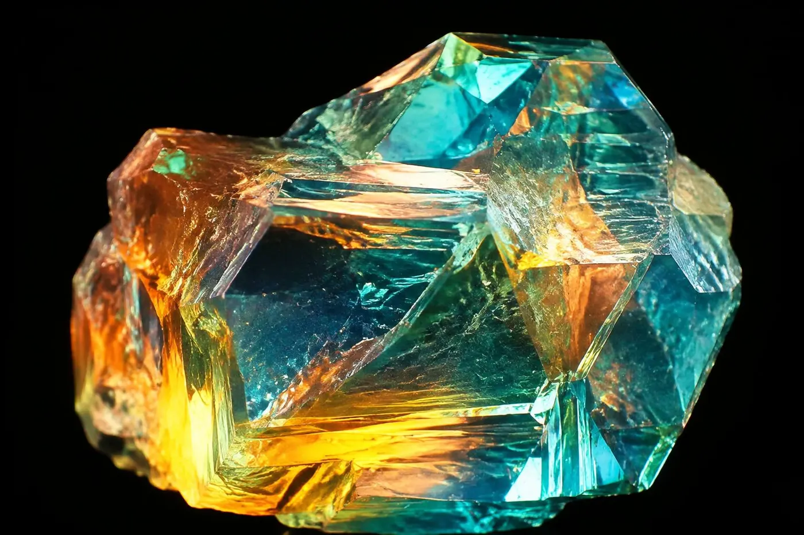
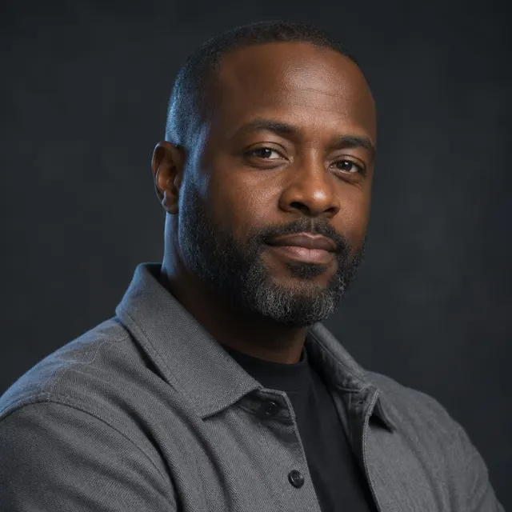
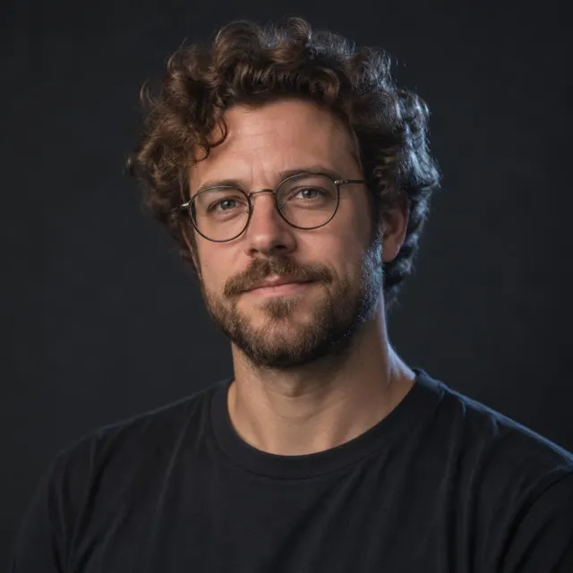
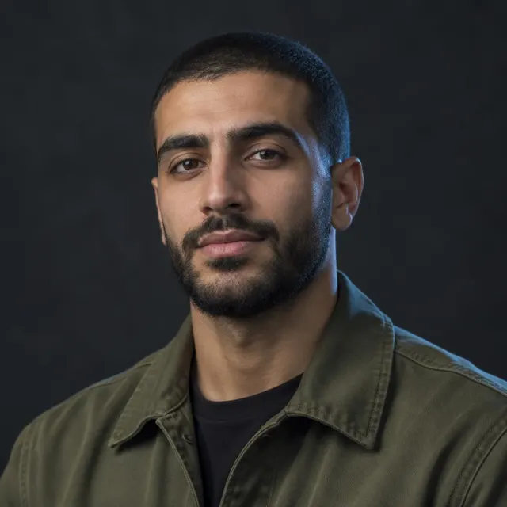

Seed and Series A · $48M raised
We are teaching machines to invent matter.
Every leap in energy, compute and medicine started as a new material. Aperiodic builds foundation models that design them, and an autonomous lab that makes them, in weeks instead of decades.
Backed by
- Northline
- HALDEN
- fieldwork
- Parallax
- Ostrom&Co
01 — The problem
It takes twenty years and a billion dollars to bring one new material to market. Lithium-ion took thirty. We do not have thirty years for the next one.
02 — The thesis
- i.
Chemistry is a search problem.
The space of stable inorganic compounds is larger than 1010. Humans have characterised fewer than 200,000. The rest is unexplored map.
- ii.
Models need their own lab.
Simulation alone drifts from reality. Our robots synthesise and measure every prediction, so the model learns from atoms, not papers.
- iii.
The loop is the moat.
Each cycle of design, make and measure makes the next one faster. After 14 months, ours closes in 9 days.
03 — The platform
Atlas, the design–make–measure loop.
Describe the property you need. Atlas proposes structures, ranks them by synthesisability, and queues the best for the robots overnight.
Target
- Ionic conductivity
- > 10 mS/cm
- Stability window
- 0 – 5.2 V
- Elements excluded
- Co, Ge
- Cost ceiling
- $40 / kg
Status
Robots synthesising 6 of 12
Ranked candidates
| Formula | σ (mS/cm) | Synth. | Stage |
|---|---|---|---|
| Li6PS5Cl0.4Br0.6 | 14.2 | Measured | |
| Li3YCl4Br2 | 11.8 | Measured | |
| Li7La3Zr1.6Ta0.4O12 | 10.9 | In furnace | |
| Na3SbS3.7W0.3 | 10.4 | In furnace | |
| Li2ZrCl5F | 9.7 | Queued |

04 — Traction
Candidate structures screened every week
From target spec to measured sample
Novel compounds synthesised and verified
Paid pilots with industrial partners
05 — Team
Physicists, chemists and roboticists who got tired of waiting.
Mei Lin Zhou
Co-founder, CEO
Prev. materials lead, national lab
Daniel Okafor
Co-founder, CTO
Prev. research scientist, AI labPriya Raman
Head of Chemistry
PhD solid-state chemistry
Jonas Weber
Head of Robotics
Prev. lab automation startupElena Vargas
Chief Scientist
Former professor of physics
Karim Haddad
ML Research Lead
Graph neural networks
06 — Investors and advisors
In good company.
Lead investors
- Northline VenturesSeries A lead
- Halden CapitalSeed lead
- FieldworkSeed
Angels
- Ruth AlbrechtFounder, battery cell maker
- Tomás IlićEx-VP Research, chip foundry
- Sana MirzaPartner, climate fund
Advisors
- Prof. Henrik LundComputational chemistry
- Dr. Aiko TanakaCrystallography
- Marcus BellIndustrial scale-up
“The closest thing to a self-driving lab we have seen outside of a government facility.”
The Signal Review
“Aperiodic is betting the next battery will be found by a model, and they are building the robots to prove it.”
Frontier Weekly
“A small team doing very large science.”
Materials Today Dispatch
07 — Careers
Come invent something that did not exist yesterday.
Boston and remote. Competitive equity, a real lab, and problems nobody has solved.
Have a material problem?
We take on a small number of industrial partners each quarter. Tell us what you need to exist.